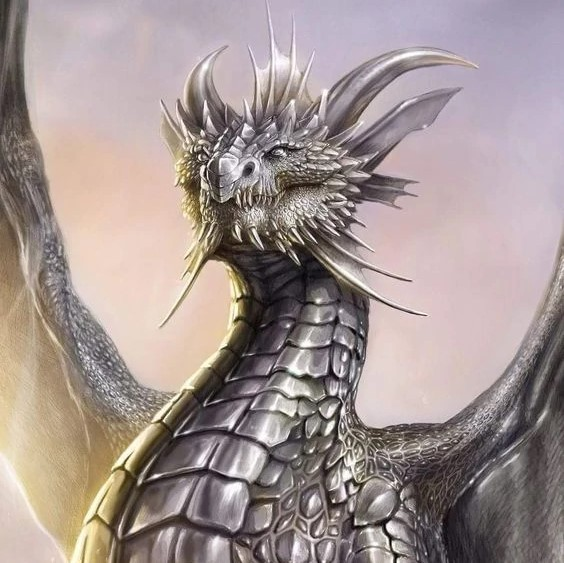
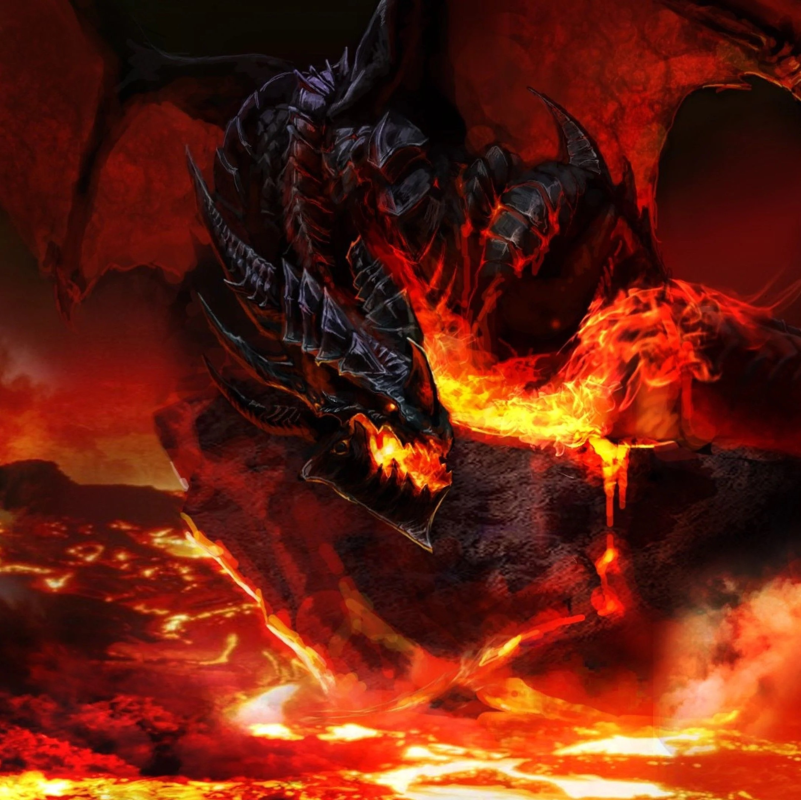
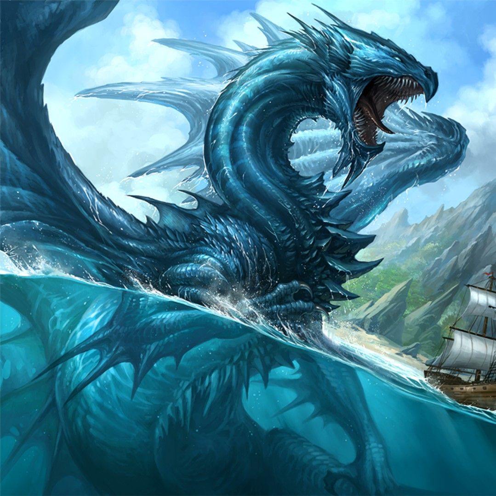
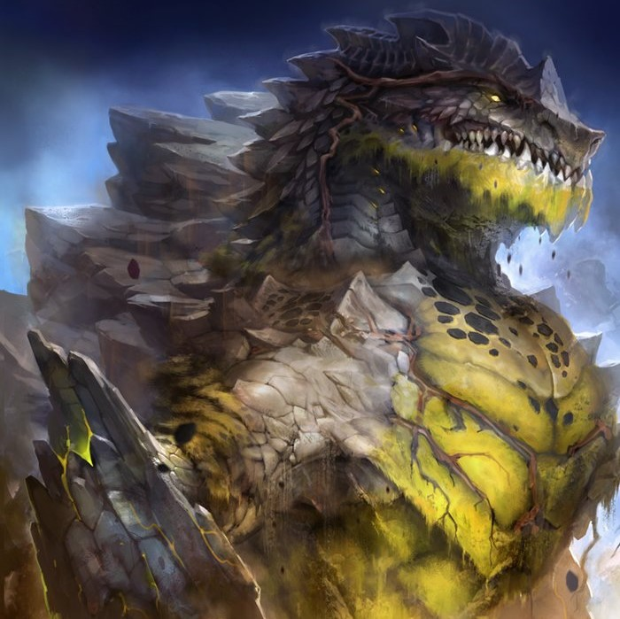
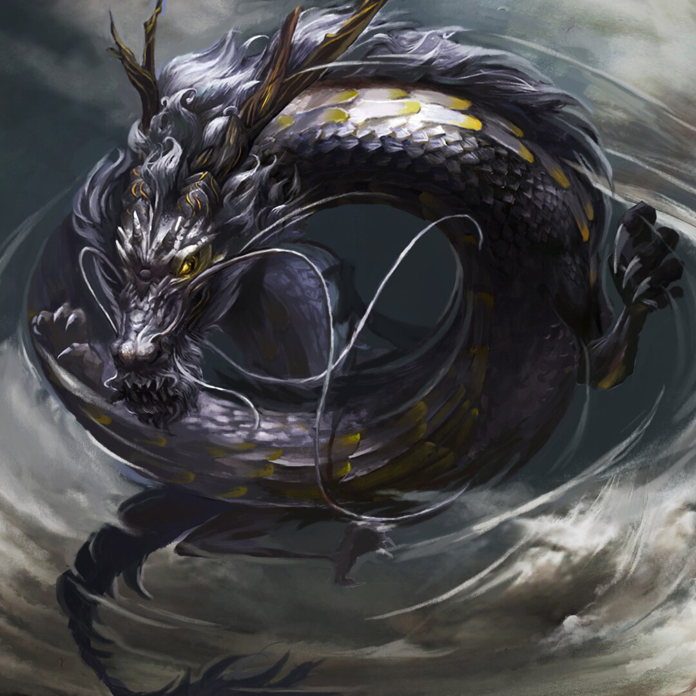

Na batalha pelo continente, grandes heróis seguem firmes protegendo todos aqueles que resistem à tirania de Tiamat. A resistência encontra-se concentrada em Ellesméra, unida sob as ordens dos 5 comandantes: Bahamut, Kalamoth, Malphas, Caelum e Kyofu.
Bahamut é o príncipe herdeiro. Sempre amável e gentil, ajuda todos que estão ao seu redor, sendo por isso extremamente respeitado. Frente a injustiças, entretanto, se torna uma força implacável. A traição de seu irmão é uma ferida aberta que ele pretende fechar a todo custo, mesmo que este seja sangue.
O Primeiro Comandante Kalamoth é o braço direito de Bahamut, mesmo sendo seu completo oposto. Seus pais foram mortos quando ainda era criança, o que o tornou frio e sem remorso. Aprendeu desde cedo a conquistar seu espaço com a força do ódio, recebendo o apelido de Tornado de Fogo. Sua única luz é a lealdade a Bahamut, que o acolheu em seu momento mais sombrio.
Malphas é o senhor dos mares. Suas habilidades marítimas rapidamente o tornaram capitão da Frota Azul, posto que aceitou com muito agrado. A paixão pelo mar une ele e seus marinheiros num laço de lealdade inquebrável, portanto, nada passa pelas águas de [Nome do Mar] sem seu consentimento.
Apesar de Caelum ser o maior e mais forte dos comandantes, possui também uma furtividade e percepção inigualáveis, o que faz com que sempre esteja um passo à frente dos inimigos. É o único a comandar dois exércitos: a Companhia de Pedra, que patrulha as ruas da cidade, e os Guardiões das Sombras, vigilantes silenciosos das montanhas.
Kyofu é o mais velho dos comandantes. Era o braço direito de Io, o antigo rei, jurando não descansar enquanto o trono não pertencesse ao verdadeiro herdeiro. Suas habilidades aéreas fizeram dele Patrulheiro do Ar, mas poucos conseguem acompanhá-lo sobre as nuvens por tanto tempo, o que torna sua função extremamente solitária.
Ellesméra é uma região fértil e que tem de tudo um pouco. Bahamut a escolheu estrategicamente para organizar-se para a batalha devido à proteção pelas montanhas, que dificulta o acesso de forasteiros e permite fácil defesa, enquanto a conexão pelo mar protegido por Malphas fornece uma saída fácil para seus guerreiros e mercadores.
Entrando no vale é possível ver cachoeiras e toda uma estrutura muito bem montada, onde a civilização que acredita na soberania de Bahamut vive pacificamente, bem protegida pelo exército real.